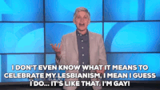

10 Times Ellen DeGeneres Proved She is a Pioneer and Icon for the LGBTQ Community
When she spoke out against bullying on her talk show in the wake of tragedies involving LGBTQ youth suicides.
When, after an anti-LGBTQ pastor accused her of celebrating her “lesbianism,” she responded in classic Ellen fashion.

When she donated $25,000 to a fund for the survivors of the Pulse nightclub shooting, and gave Tony Marrero -- one of the survivors the surprise of a lifetime.
When she schooled Senator John McCain on the importance of LGBTQ rights and marriage equality.
When she featured two best friends on her show -- one gay, the other straight -- who attended prom together.
When she told our nation’s youth that there’s nothing wrong with being different.
When she gave Blossom Brown, a transgender student and HRC volunteer, $20,000 to help her follow of her dream of becoming nurse.
When she spoke out against hate and advocated for tolerance after the murder of Matthew Shepard, an openly gay man who was brutally killed in Wyoming.
When former President Obama praised her for making our country a little more accepting of one another.
And of course the moment that started it all -- when she decided to come out in the most public way possible on her TV show, Ellen.
Oprah and Ellen Remember the History-Changing 'Coming Out' Episode